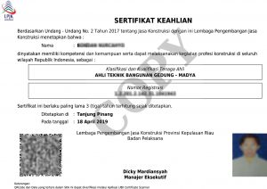

Kami Mampu Melakukan Percepatan dalam Pengurusan Sertifikat Keahlian SKA dan SKT
Permohonan SKA SKT Kami Proses Cepat
Dengan sistem kerja yang baik dan dibantu dengan teknologi komputerisasi terkini kami mampu meminimalisasi waktu pengurusan Sertifikat keahlian SKA dan SKT dan juga meminimalisir adanya kesalahan input data.

Syarat Dokumen SKA & SKT
- Untuk SKA perlu melampirkan Ijasah, KTP, NPWP, Photo
- Untuk SKT perlu melampirkan Ijasah, KTP, Photo
- Syarat Lainnya Bisa hubungi : 0811-9231-551